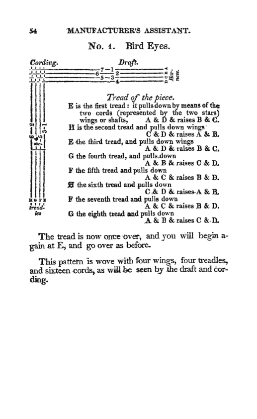

Weaving
Step through Bronson’s Bird Eyes draft from 1817. Highlight one warp thread, change a treadle, and compare the result with the printed instructions.
Inspect source image

Step through Bronson’s Bird Eyes draft from 1817. Highlight one warp thread, change a treadle, and compare the result with the printed instructions.
